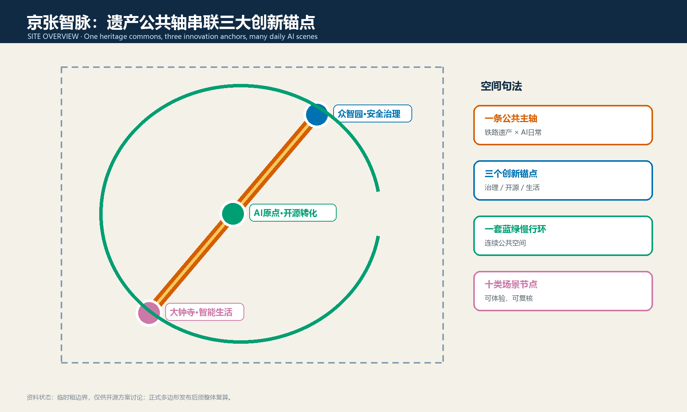
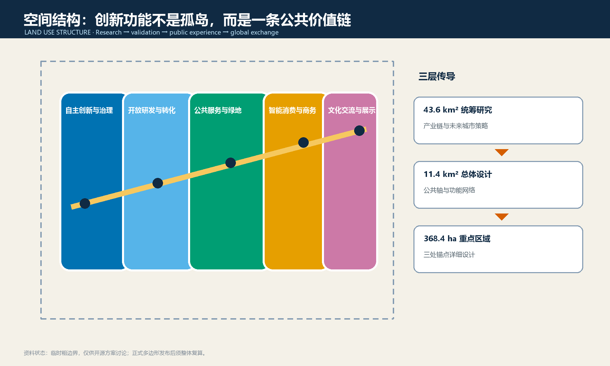
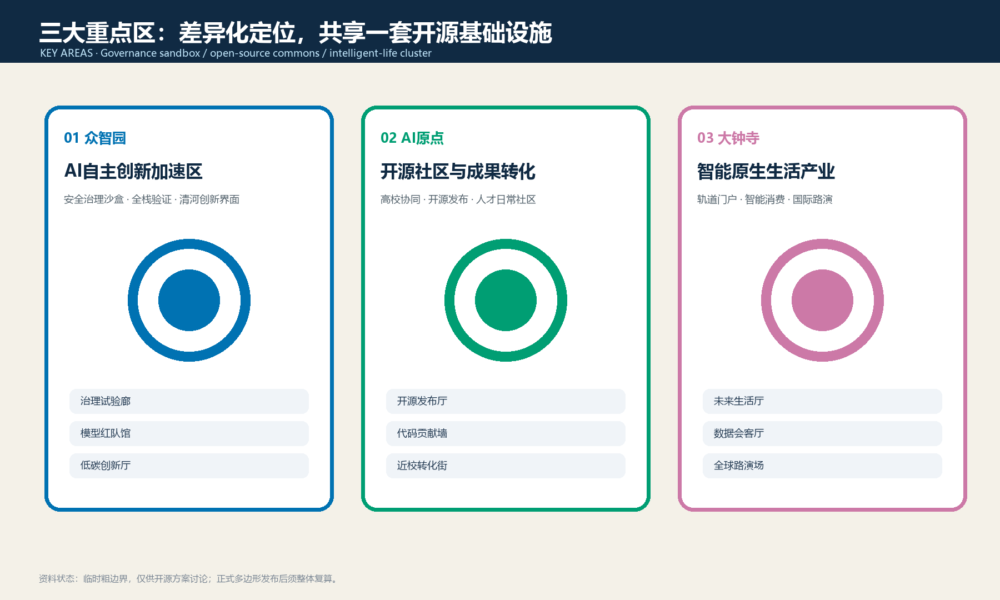
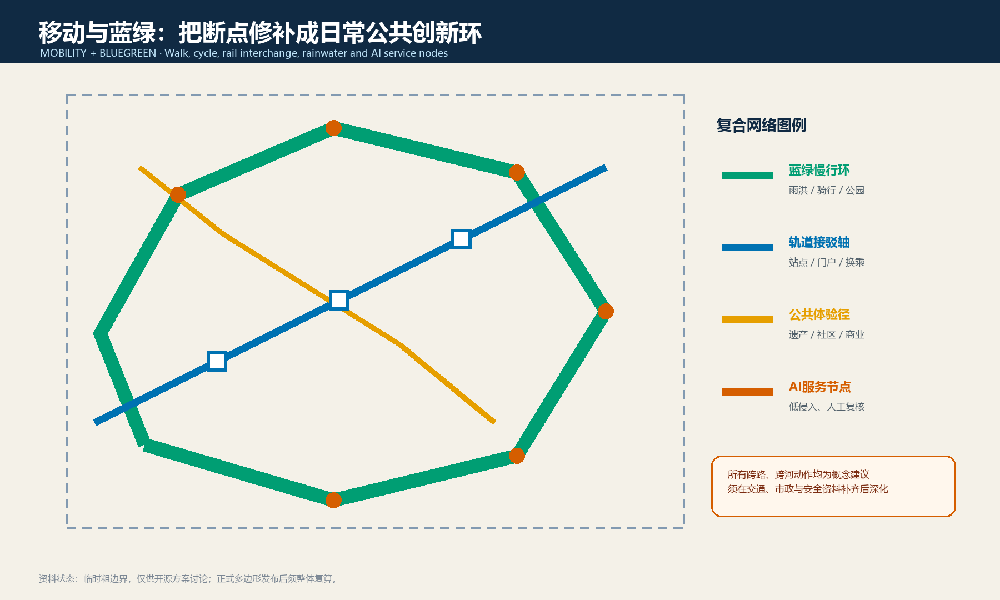
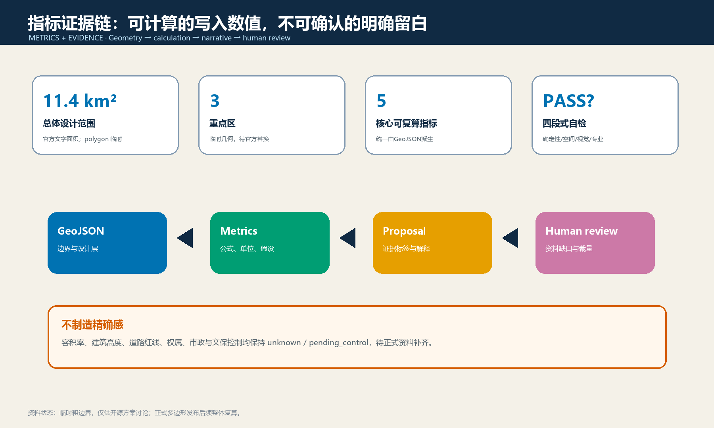

展板导航
总览地图 · 三层范围 · 重点区域 · 用地分区 · 交通慢行 · 蓝绿公共空间 · 建筑 · 更新项目 · AI 场景 · 核心指标 · 任务覆盖 · 自检状态 · 来源 · 假设

site-overview.png
land-use-structure.png
key-areas.png
mobility-bluegreen.png
metrics-evidence.png十类场景
| 研发治理 | 城市日常 | 公共文化 |
|---|
开源发布厅
安全治理沙盒
端侧算力驿站 | 慢行导航
AI生活样板街
数据要素会客厅 | 低碳创新廊
近校转化街
全球AI活动周
贡献荣誉节点 |
任务覆盖与自检
agent.1—agent.6 已映射至正文、GeoJSON、指标、图纸和合规矩阵。最终状态以 self_check.json 为准；空间建议均需专业团队和法定程序深化。
来源与假设
来源：官方公告、已清权任务书、仓库标准快照与 source_registry.json。假设：当前仅有 provisional boundaries；控制性详细规划、道路红线、权属、市政、消防、文保与既有建筑资料均待补。